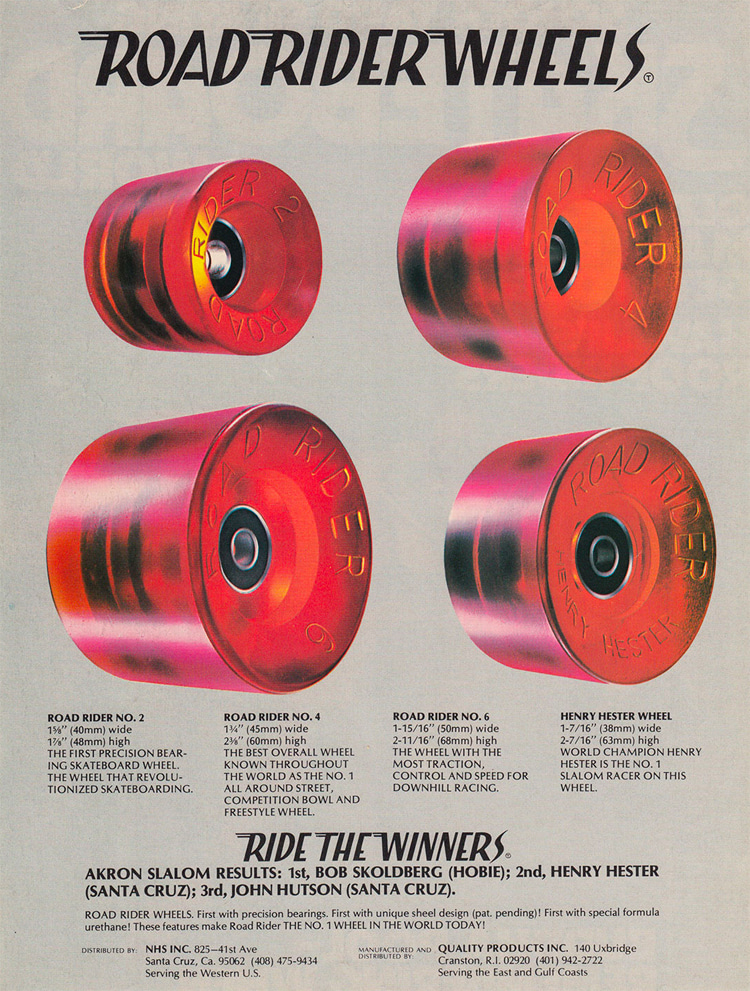
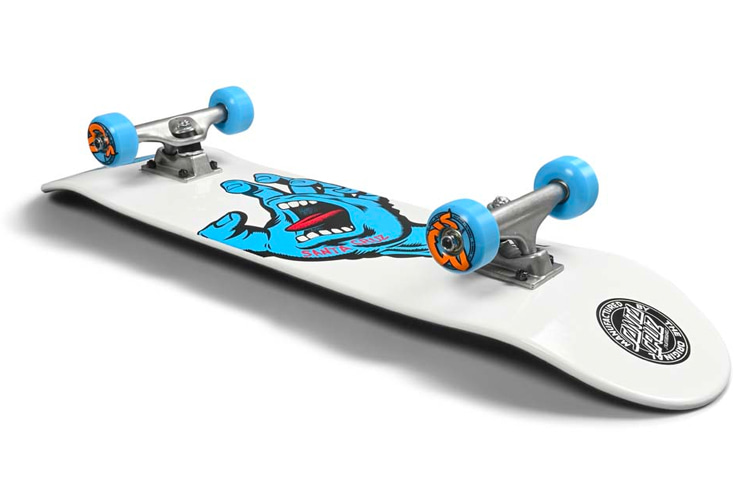
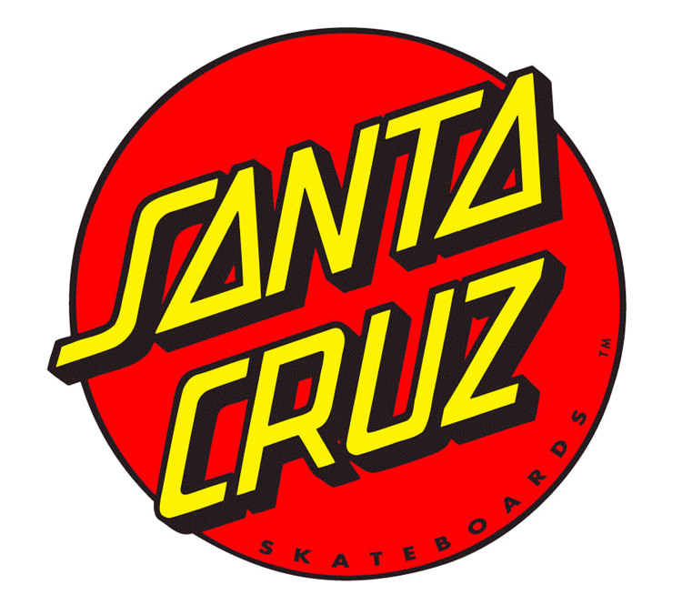
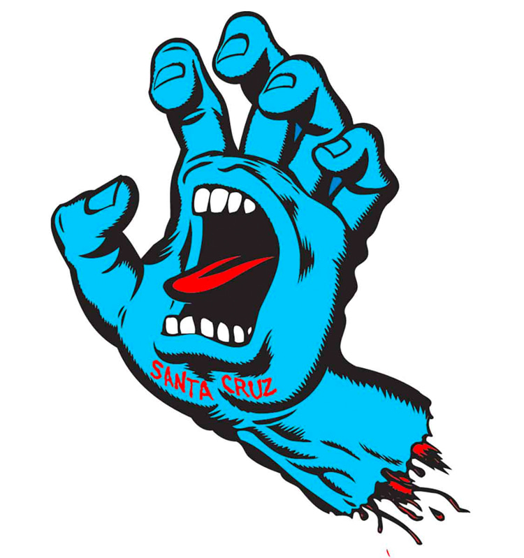

In 1973, Richard Novak, Doug Haut, and Jay Shuirman, three surfer friends from Santa Cruz,
California, teamed up to start NHS Inc.
The acronym NHS comes from their surname initials - Novak, Haut, and Sherman.
In the beginning, their surfboard brand business was struggling to stay afloat because the margins were low.
But all of a sudden, a friend from a Hawaiian company challenged NHS to make 500 skateboards.
NHS had a surplus of fiberglass lying around and barely any customers, so they decided to use the stocked
materials to fulfill the order.
The first-ever Santa Cruz skateboard was produced in 1973.
The batch of 500 skateboards sold quickly, and so the newly created skate brand immediately got another order of
500.
From that moment on, the company became a symbol of skateboard culture. The first Santa Cruz ad was run in
Skateboarder Magazine, Volume 2, Issue 3.
Doug Haut later sold his shares in Santa Cruz and started his own surfing company under his name.
It ended up being so successful that he was later inducted into the International Surfboard Builders Hall of
Fame.



The Road Rider Wheels Revolution
In the early days of skateboarding, wheels were made of metal and mounted directly to the axle.
The industry then moved on and introduced clay wheels which would wear out and break apart over time.
In the early 1970s, the very first urethane wheel hit the market.
They were called Cadillac Wheels and revolutionized all the tricks that you could do on a skateboard.
In 1974, Santa Cruz answered with their very own Road Rider Wheels.
Urethane is still what we make our wheels out of today, but the reason Road Rider was so well-received was that
it had the very first precision ball bearings.
Up until that point, every wheel, including the Cadillac Wheels, just had loose ball bearings in the wheels for
them to spin.
But the birth of the Road Riders was unorthodox.
"One day, while Richard and Jay were assembling loose ball bearing wheels onto trucks, something happened that
wound up changing the entire skateboard industry," writes Michael Brooke in "The Concrete Wave."
"By accident, Jay spilled a wooden cask of nearly 100,000 individual loose ball bearings. After this incident, a
man named Anthony Roderick walked into the shop."
"Tony was from a Rhode Island company called Quality Products. Holding a sealed precision bearing in his hand,
Tony wondered if there was an application for skateboard wheels."
"With Quality Products heading up production and NHS handling the marketing and sales, the Road Rider precision
skateboard wheel was born."
Road Rider Wheels were so popular that when they came out that by the end of 1975, they sold over a million sets
worldwide.
One year later, the firm sold six million Road Riders.
NHS made so much money off their newest product that they invested a lot of that money into the brand, making
Santa Cruz a huge and prominent brand in skateboarding.
The company kept innovating and created graphite-loaded slalom boards and one of the first five-ply board
models.
In 1978, the alliance between NHS and Ermico Enterprises led to the creation of "The Independent," an innovative
truck model initially available in 88 mm and 109 mm.
Independent Trucks was a huge hit within the skateboarding community.
As a result, NHS and Santa Cruz had built a significant market share of decks, wheels, and trucks.
Jay Shuirman died in 1979 of leukemia, meaning he didn't get to see the brand flourish and grow and become the
multinational conglomerate that it is today.

The Iconic Logos
Santa Cruz is known for two very iconic logos - the red dot logo and the Screaming Hand logo.
The red dot logo was the very earliest logo that Santa Cruz ever put out. It was designed by Jay Shuirman and
Jim Phillips.
Not long after that, the Screaming Hand logo saw the light of day and became just as iconic and legendary as the
original red dot logo.
The famous Screaming Hand logo was designed solely by Jim Phillips.
It was a big step forward in the world of skateboard graphics because of its bold lines and bright colors and
because it used real artwork on the branding of a skateboard.
Tim Pimuarta helped set up the company's first skateboard factories in the early 1980s in northern Wisconsin.
He believes the region has the best hard maple on the planet.
"Santa Cruz had its factories in the forest," Pimuarta told Matt Berger, author of "The Handmade Skateboard."
"I didn't believe in shipping all that maple to California, so we put our skateboard factories in a couple of
places in northern Wisconsin that made fine cabinetry - they needed the extra revenue."
"We set up three shops there and one in Santa Cruz and produced about 900 decks a day."
Pimuarta added two additional plies of wood to the five-ply boards and worked with silkscreen technologies to
achieve full images on boards.
However, soon the cost of manufacturing products in the United States soared, so the company sent most of its
production overseas.
While making a blank skateboard in America cost $75, it was possible to produce the same model for $15 or less
in China.
Santa Cruz has always put a ton of effort into having the best skateboarders in the world represent their brand.
In the 1970s, they had John Hutson, who was the number one slalom skateboarder in the world at the time.
Going into the 1980s, they added Rob Roskopf, Jeff Kendall, Micke Alba, and later Jeff Grosso and Jason Jessee.

The Role of Jim Phillips
Santa Cruz would not be the iconic skate brand that it is today without the artwork of Jim Phillips.
In the early days of skateboarding, decks and marketing were mostly all about fonts or one-color graphics.
Phillips was one of the first to bring in real artwork and put it on everyone's boards.
The visual artist introduced these really colorful and bold graphics that made Santa Cruz Skateboards so
appealing and commercially viable.
They were the boards that everybody wanted because they stood out so much among all the other brands.
Jim Phillips is responsible for several iconic skate-related artworks.
He's known for the Independent Truck Company logo, the Steve Olson checkered board graphic, the Rob Roskopf
series, the Jeff Grosso toy box series, Jason Jessee's Poseidon deck, the Salba Tiger deck, the Natas SMA
Panther, the Jim Thiebaud comic book board, etc.
In 2017, Phillips was inducted into the Skateboarding Hall of Fame.
His son, Jimbo, adopted his father's style, i.e., continued with the heavy lines and the striking pop graphics.
He continues doing artwork for Santa Cruz Skateboards and even designed a hockey jersey for the San Jose Sharks.
To celebrate the 30 years of the Screaming Hand logo, the company did an art show featuring several different
artists, all drawing their version of the Screaming Hand logo.
It included artists such as John Lucero, Steve Caballero, Steve Olson, Ben Horton, Sean Cliver, Andy Jenkins,
Mark Gonzales, and many more.